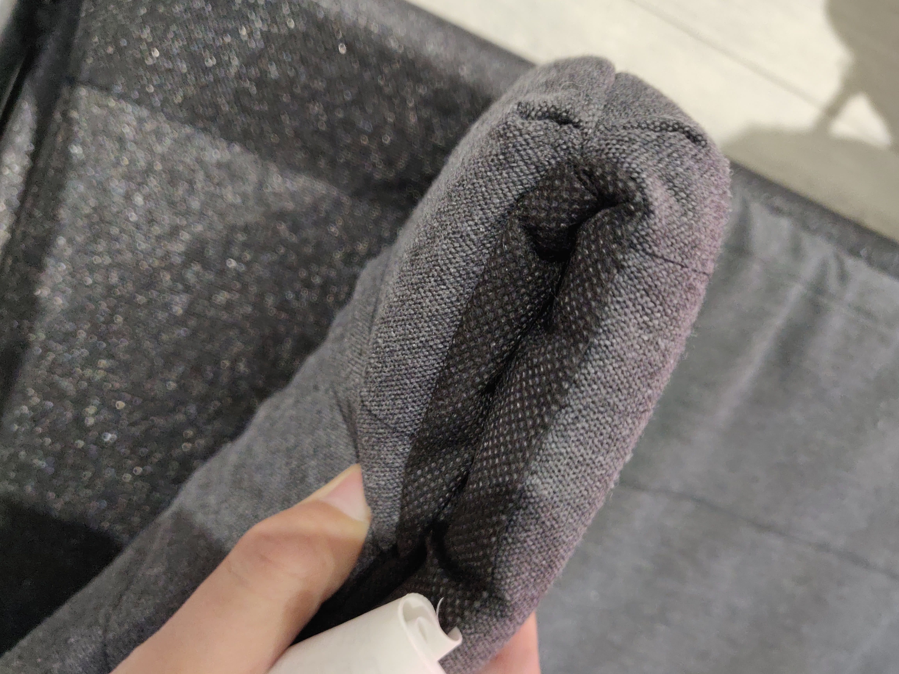

The wardrobe is there at home, and the question is what kind of material should be used to decorate the interior. After some thought we decided to use clothing, a wool blanket and sofa cushions (my sofa cushions are particularly thin), all of which seemed to fit the bill - after all, none of them has a smooth surface.

We stuffed these into the wardrobe in a specific way, we started by hanging some clothes inside and putting a wool blanket over them to cover the smooth surface of the ceiling inside the wardrobe, then we spread the sofa seat cushion around the interior, see pictures of the look.